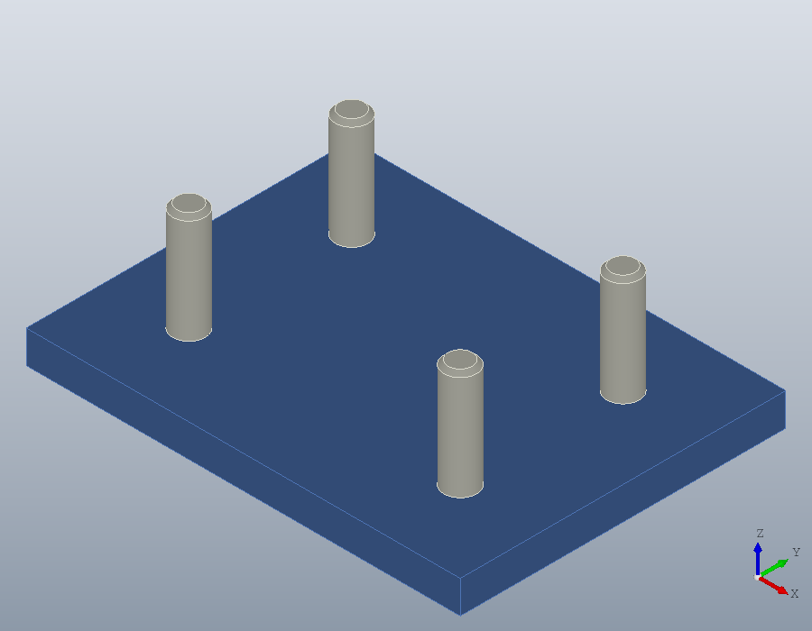
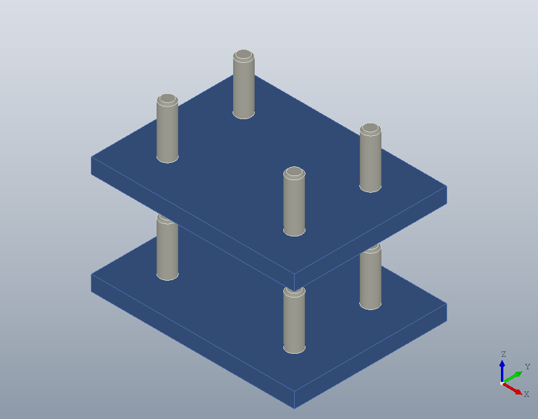
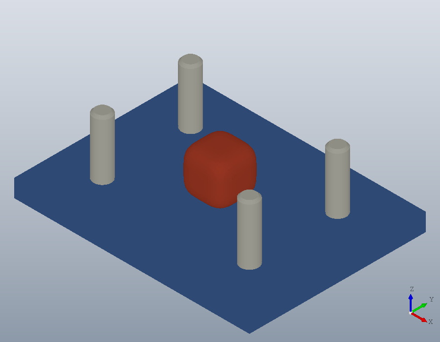

Assemblies
A product is named parts placed together, a part defined once however often it is used. This tutorial builds a fixture, stacks it, adds a part that exists only as a mesh, and saves the whole for a CAD program and a slicer.
Parts
A part is a solid.Shape or a polymesh.Mesh, modelled in its own coordinates. A plate, and a pin with its top edge chamfered, each in a colour of its own:
plate = solid.box (80, 60, 6);
plate.Colour = [0.3, 0.45, 0.7];
pin = solid.cylinder (3, 20);
pin = chamfer (pin, edges (pin, 'Within', [-4, -4, 19, 4, 4, 21]), 0.8);
pin.Colour = [0.85, 0.85, 0.8];Placing parts
add places a part in the frame of a geom.UCS: the part's own origin goes to the frame's origin and its axes along the frame's. The first use of a name defines the part; a later use with [] places the same part again. Each placement is named after its part, pin, pin:2 and so on, and 'Name' names one otherwise.
A = model.Assembly ('fixture');
A = add (A, 'plate', plate, geom.UCS ());
A = add (A, 'pin', pin, geom.UCS ([0, 0, 1], [15, 15, 6]));
A = add (A, 'pin', [], geom.UCS ([0, 0, 1], [65, 15, 6]));
A = add (A, 'pin', [], geom.UCS ([0, 0, 1], [15, 45, 6]));
A = add (A, 'pin', [], geom.UCS ([0, 0, 1], [65, 45, 6]), 'Name', 'datum');
A
{A.Instances.name}
show (A);A =
model.Assembly 'fixture': 2 parts, 5 placed
ans =
{
[1,1] = plate
[1,2] = pin
[1,3] = pin:2
[1,4] = pin:3
[1,5] = datum
}
The four pins are one part placed four times, so the assembly holds two parts and five placements.
Sub-assemblies
An assembly is a part like any other. Two fixtures stacked into a tower are one part, the fixture, placed twice:
tower = model.Assembly ('tower');
tower = add (tower, 'stage', A, geom.UCS ());
tower = add (tower, 'stage', [], geom.UCS ([0, 0, 1], [0, 0, 40]))
show (tower);tower =
model.Assembly 'tower': 1 part, 2 placed
shape gives every solid of the assembly where it is placed, kept apart and in their colours, as one solid.Shape to measure or cut.
S = shape (tower);
numsolids (S)
volume (S)ans = 10
ans = 6.2080e+04Mesh parts
A part that exists only as a mesh, a download or a scan, joins an assembly as it is. A rounded knob, made here from an isosurface, sits in the middle of the plate:
[x, y, z] = meshgrid (linspace (-10, 10, 31));
knob = polymesh.Mesh (isosurface (x, y, z, x .^ 4 + y .^ 4 + z .^ 4, 3000));
knob.FaceColour = repmat ([0.8, 0.3, 0.2], numfaces (knob), 1);
B = add (A, 'knob', knob, geom.UCS ([0, 0, 1], [40, 30, 13.4]));
show (B);
A mesh has no exact shape, so shape refuses an assembly holding one, and tessellate gives the whole as one mesh instead, each triangle in the colour of its part.
M = tessellate (B)M =
polymesh.Mesh: 3738 vertices, 7452 triangles, face coloursFiles
write saves an assembly with its structure. A STEP file keeps every part once, with its name and colours, placed by named placements, so a CAD program opens the product as it was built. A 3MF file, for a slicer, keeps each part as one mesh placed as often as it is used, and it may hold mesh parts.
write (tower, 'tower.step');
write (B, 'fixture.3mf');model.read reads either back. The tower comes back as one part placed twice, and inside it the fixture with its placements, datum among them:
C = model.read ('tower.step')
stage = C.Parts(1).item;
{stage.Instances.name}C =
model.Assembly 'tower': 1 part, 2 placed
ans =
{
[1,1] = plate
[1,2] = pin
[1,3] = pin:2
[1,4] = pin:3
[1,5] = datum
}The 3MF file gives back the parts and where they are placed. 3MF names the parts but not their placements, so the placements are numbered again:
D = model.read ('fixture.3mf')
{D.Instances.name}D =
model.Assembly 'fixture': 3 parts, 6 placed
ans =
{
[1,1] = plate
[1,2] = pin
[1,3] = pin:2
[1,4] = pin:3
[1,5] = pin:4
[1,6] = knob
}